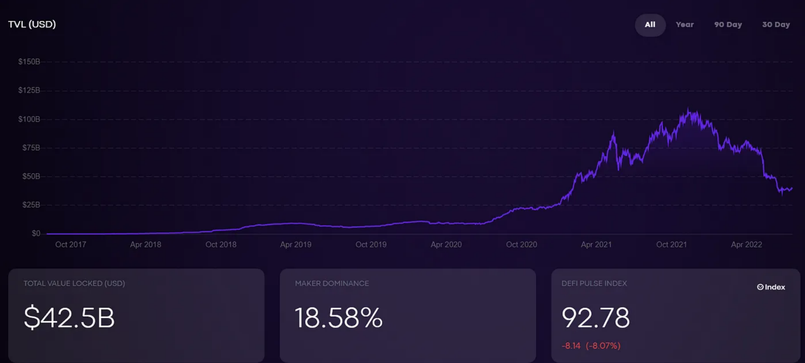

前言
從去年下半年就一直深入研究 DeFi 相關的東西，以下就稍微介紹一下最近研究的東西。但是內容很多，所以會分成多篇分享，如果有時間就會繼續更新。
什麼是 DeFi？
DeFi 是 Decentralized Finance「去中心化金融」這個詞組的縮寫，意指基於智能合約平台（例如以太坊），將加密資產以及協議像樂高一樣組合起來構成新的服務，因此也被稱為「貨幣樂高」。它以分散管理權的模式運營，解決傳統金融產業交易速度慢、成本高、且會被國家或組織濫用等問題。
DeFi 項目現況
從借貸、支付、去中心化交易所(DEX) 、衍生品交易、虛擬資產管理到保險等，Defi項目的總鎖倉資產(TVL)目前處於短暫低谷。從DeFi Pulse 的資料中（如下圖，截至2022年7月21日），目前來到425億美金，其中，借貸項目Maker 最大。它佔據了18.58%的主導地位，TVL 為79億美元。除了Maker之外，還有許多其他由智能合約直接託管的 DeFi 項目，這些合約由大量的透明協議代碼組成，用於自動交易。儘管目前處於加密貨幣市場熊市，投資於 DeFi 市場的資金相比去年大幅下降，但是大量的 DeFi 項目仍不斷推出。
他們的成功反映了區塊鏈安全性、底層資產的價值以及 DeFi 開發者的生態支持。儘管到目前為止，DeFi 投資的規模和金額都相對較小，但我們預計增長機會的巨大潛力及其對金融服務的影響。特別是在CBDC（中央銀行數字貨幣）發行之初，銀行和證券的傳統服務將在未來幾年內面臨數字化轉型，而且遍歷全球的新興沉浸式創新模式將面臨新的挑戰 DeFi 開發人員協會，並通過互聯網市場進行持續測試。
DeFi 優點
Defi是指利用開源軟體和分散式網路，將傳統金融產品轉變為無需信任且透明的協議，在沒有不必要中介的情況下運行。Defi本身是一種概念與架構，將「去除中心」為核心，即沒有所謂的管理員，每個使用者都是平等的，且擁有相同的權限，假使有某一人想改變內容，需經過大家同意，因此Defi特性為所有權分散、不屬於任何人、不易被竄改，Defi也具備區塊鏈的優勢，擁有透明性、抗審查、不可竄改等特性。
DeFi優點眾多，包括無需信任基礎、無需機構許可、資產控制權掌握在自己手中等，其主要優勢，是通過去中心化來消除「可信任第三方」，保持分類帳本的透明性和不可篡改性。
DeFi 和 Fintech 最大差異在於「信任」機制，Fintech 是在既有的金融架構上使用區塊鏈技術，仍存有中心化的機構，且所有操作都是由人為控制，僅藉由第三方的信任機制取得用戶信任；而 DeFi 最大的特色就是去中心化，加上使用智慧合約，且程式碼開源，核心邏輯都是在區塊鏈執行，無法更改、具有強制性，因此用戶可以直接信任其架構本身。
DeFi 例子
以下按 DeFi Pulse 將 DeFi 生態系區分為借貸(Lending)、交換(Swap)、資產管理(Asset Management)、衍生品交易所(Derivatives)等幾個例子，而我研究最多的就是衍生品，有機會再做細部分享：
- 借貸 (Lending)
- 交換 (Swap)
- 資產管理 (Asset Management)
- 衍生品 (Derivatives)
Case 1: Compound
Compound 是一個透過 Ethereum 區塊鏈上的智能合約，達到去中心化借貸的服務。相較於傳統的中心化金融，Compound 擁有公開透明的利率模型、高隱私性、即時借款、放貸免綁約的特色。
Case 2: Aave
Aave 是一個去中心化的借貸系統，允許使用者在不需要中間人的情況下借入、借出和賺取加密資產的利息。 Aave 在以太坊區塊鏈上運行，並使用智能合約系統，使平台上的資產能夠由運行其軟體的分散式電腦網路管理。 因此，他們的使用者不必信任某個機構或個人來處理他們的資金。
Case 1: Uniswap
Uniswap 是一個在以太坊區塊鏈上運行的交易所，它支援 ETH（以太幣）與 Token 之間、Token 與 Token 之間的快速兌換。這個交易所最大的特色是：它不需要 order book （掛單簿）系統，價格完全根據人們在此交易所進行的買賣自動調節。Uniswap 交易模式擺脫掛單簿，並在送出交易前就已得知報價。
Case 1: PieDAO
PieDAO是一個去中心化的組織，通過致力於為以太坊網路上任何人提供的通證化投資組合分配提供治理層，從而帶來市場通達性和經濟授權。
Case 2: Mirror
Mirror protocol 是基於 terra 鏈的合成資產協議，是用於現實世界資產的鏈上價格風險合成協議。用戶可以通過抵押 terra.money 的穩定幣 UST 來合成現實世界的資產，例如股票等。
Case 3: Synthetix
在 Synthetix 是一個建立在以太坊上的、中心化的合成資產發行協議。在 Synthetix 協議中，用戶可以鑄造、持有並交易多種多樣的合成資產，包括法幣、大宗商品、股票，還有像比特幣、MKR 和LINK 這樣的密碼學貨幣的合成資產。用戶可通過在平台上合成資產來獲得相關資產的做多和做空風險收益。
Case 4: dHedge
dHEDGE 是在以太坊區塊鏈上管理投資活動的一站式場所，您可以根據透明的記錄將您的資金用於不同的策略。主要在做以太坊合成資產的非託管、去中心化資產管理。
Case 5: Set Protocol
Set Protocol 是一個基於 EVM 的資產管理平台，它利用現有的去中心化金融協議為每個人提供金融基礎設施。 Set Protocol 將加密資產捆綁到的籃子中,如通加密貨幣上的ETF，並且把這一籃子的代幣鑄造成ERC20代幣來讓使用者持有。 這些 Set 代幣充當遵循經理策略的結構化產品，允許其他人通過簡單地持有 Set 代幣來複製相同的策略。
Case 6: Enzyme
Enzyme協議是一種基於以太坊的協議，用於去中心化的鏈上資產管理。 個人或實體在可定制且安全的環境中管理其財富和他人財富的協議。 Enzyme 使任何人都可以建立、管理和投資定制的鏈上投資工具。集成200種代幣,以及集成多個Defi項目(AAVE,Uniswap…)。
Case 1: Primitive
Primitive是去中心化的期權協議，主要由CFMM(Constant Function Market Makers) 和 Portfolio Value Function 的等價關係決定價格，企圖複製(RMM) BS covered call 的payoff，達到避險目標。
Case 2: Lyra
Lyra 是一個有自動報價功能 (也就是 Automated Market Maker, AMM) 的 DeFi 選擇權協議，透過流動性提供者注入避險所需資金，並且自動提供報價給交易者來進行選擇權交易的去中心化選擇權交易協議。
跟一般的選擇權交易平台不同的是 Lyra 並不是訂單簿 (Orderbook) 的形式，在交易時不需要先有其他交易者放上訂單才可以成交，而是直接由 Lyra 報價後購買。
以上簡單介紹了一大堆項目，都是大家針對傳統金融的功能，希望能移植到區塊鏈上，達成去中心化，獲得去中心化的好處。
小結
中心化金融本身存在很多問題，包括集中化掌控、有限獲取、效率低落、缺乏戶操作性，以及不透明，因此 DeFi 的出現就是為了解決以上問題。去中心化金融和區塊鏈技術正在重塑我們的生活，去中心化已成為正在逐步實現的未來，未來想必有愈來愈多人來搶佔這塊金融版圖，簡單來說，DeFi 非常有可能是我們未來的銀行。
Reference
- DeFi未來銀行：可公開驗證、紀錄不可竄改，輕鬆實現跨境交易
非常深入淺出的一本介紹書，裡面說明了很多概念，很推薦大家讀。 - 近一年的研究心得